今天侧栏中间（导航、Workspaces、Projects）是一个滚动框。13 个 Workspace 时，在 13 寸笔记本上 Projects 只露出组头；往下滚看项目，导航和 Workspaces 一起滚走。建议：导航固定；Workspaces 和 Projects 各占一个框、各自滚，分剩下的高度——放得下就全放，放不下时各一半，一组用不满就让给另一组。每张图都是真实 Web 控制台的截图（静态构建加假数据：今天 = main 91fde3cab，建议 = 同一棵树打上 prototype.patch）；数量照你的截图（13 个 Workspace、24 个项目），名字是示例；红色虚线和数字是标注。
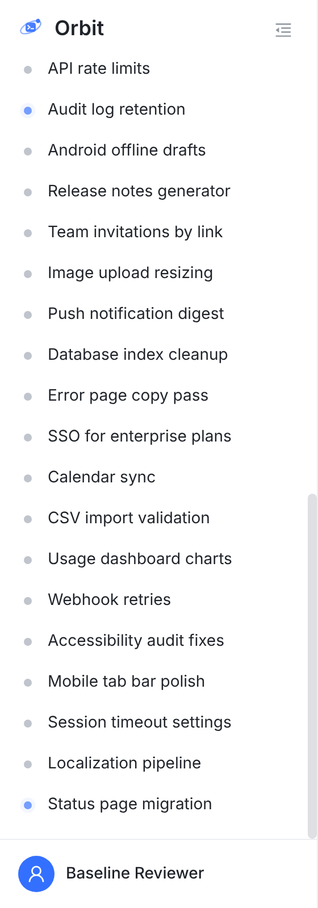
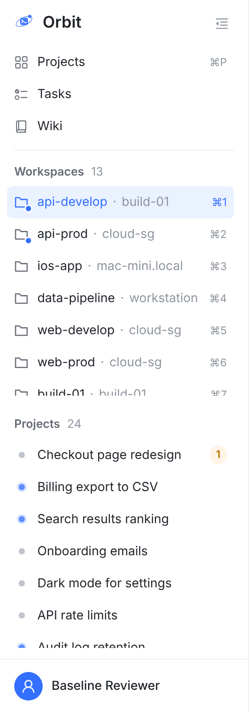
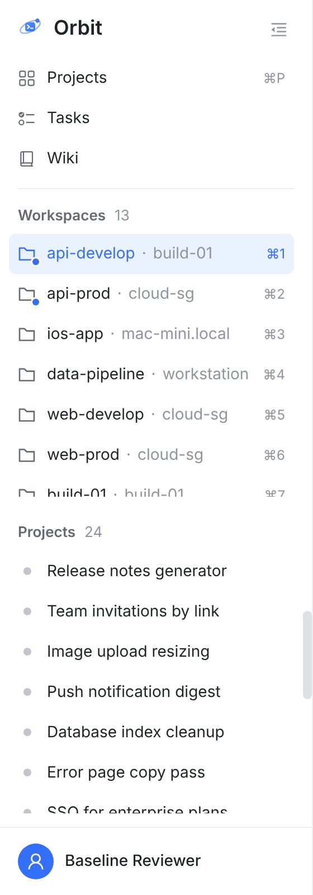
Workspaces 框自己也能滚；折叠一组，另一组就拿到全部高度；窗口够高时 Workspaces 全放下，只有 Projects 滚；窄屏抽屉（≤960 px 宽）也是这一套。
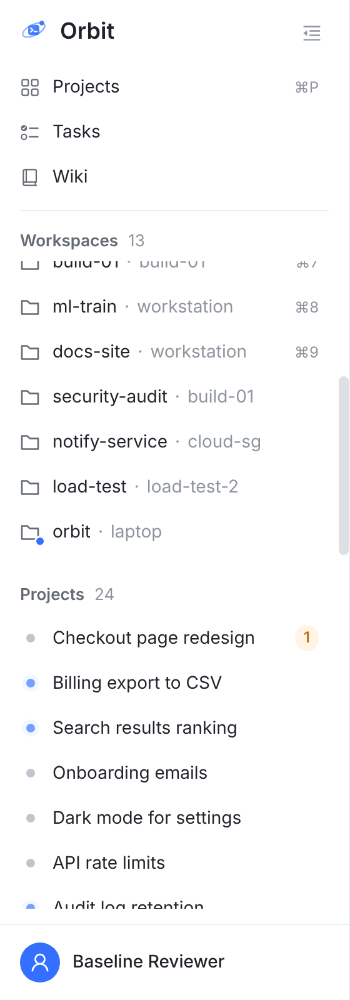
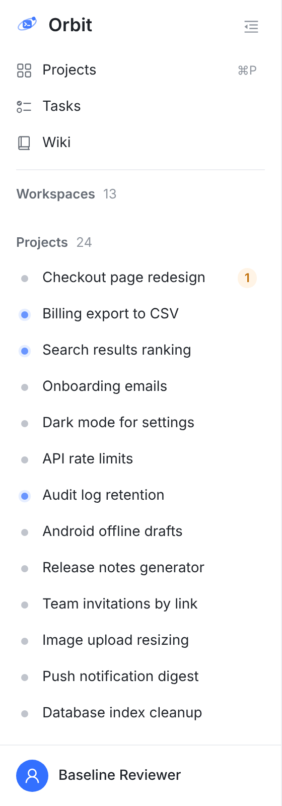
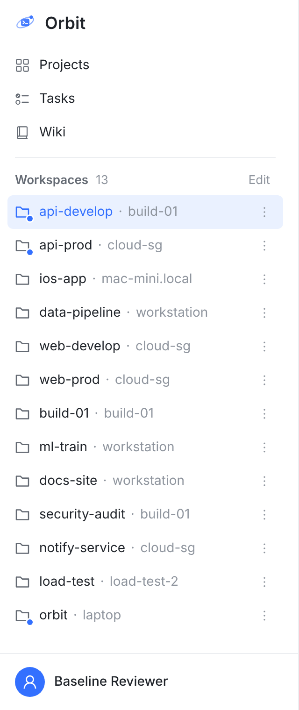
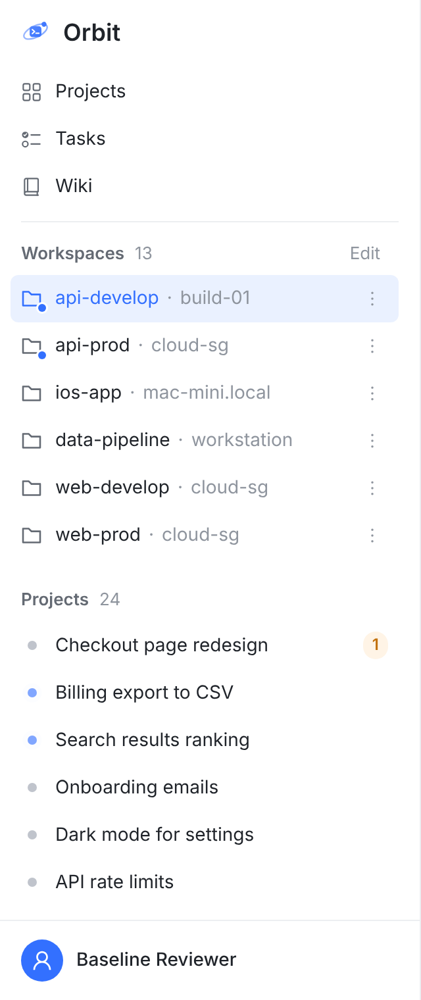
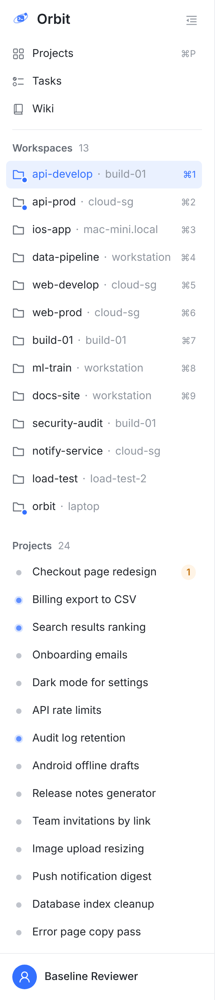
| 情况 | Workspaces 框 | Projects 框 |
|---|---|---|
| 两组都放得下 | 全放 | 全放（和今天一样，都不滚） |
| Workspaces 不到一半 | 全放，不滚 | 拿剩下的全部，自己滚 |
| Projects 不到一半 | 拿剩下的全部，自己滚 | 全放，不滚 |
| 两组都超过一半 | 一半，自己滚 | 一半，自己滚 |
| 折叠其中一组 | 另一组拿全部高度 | |
| 不变的 | 导航和账户行固定；组头可折叠；排序、⌘1–⌘9、Edit 拖动排序照旧；收起成 56 px 图标栏时照旧 | |
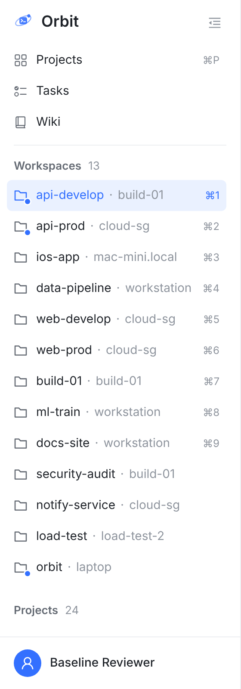
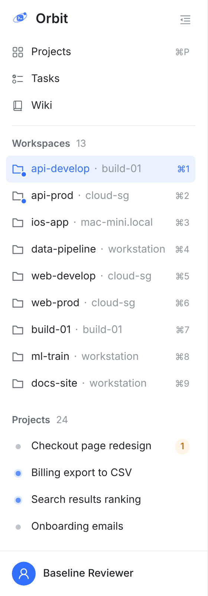
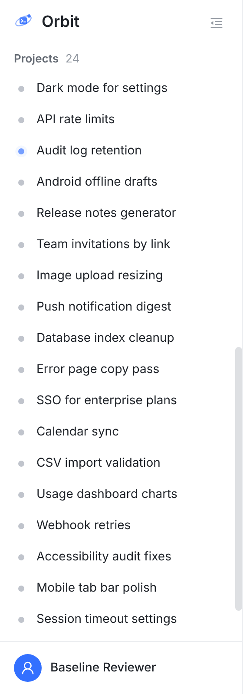
最贴字面：Workspaces 和导航永远不动。
① 13 个 Workspace 时，800 高的窗口里 Projects 框只剩组头，一个项目都露不出来；要 980 高才露出 5 个。Workspace 越多越糟。
放得下就全放，和今天一样；放不下时各一半、各自滚；折叠一组，另一组拿全部。
纯 CSS（grid 的行按内容分高度），没有写死的行数；手机抽屉同一套。
13 个 Workspace 时，笔记本上 Workspaces 也要滚（6.5 行）。
一条 CSS 规则。④ 滚到 Projects 时它的组头停在顶上，随时能点它折叠。
导航和 Workspaces 照样滚走，你截图里的问题还在。
13 寸：Workspaces 6.5 行，Projects 6.5 行；窗口 1270 高起 Workspaces 不滚。
两个方向都会把用不满的让出去，纯 CSS。
② 13 寸上 ⌘1–⌘9 九行全露；窗口 1020 高起 Workspaces 不滚。
③ Projects 只剩 4 行。
CSS 的 2 : 1 不会把用不满的让出去（项目少时 Workspaces 还卡在 ⅔、Projects 框下面空着），要照内容让高度得加几行 JS。
index.css：.tp-scroll 从一个滚动框改成 grid（导航和分隔线是固定高度的两行，两组在后面分高度），加 .tp-group-scroll（各自滚，滚动条槽位常驻，⌘P 和 ⌘1 对齐、折叠时行不跳）和吸顶的组头。TasksSidePanel.tsx：三个 className。就是下面的 prototype.patch，② ③ 的图都是它；原型树上侧栏的 9 个测试文件加 indexCss、firstPageStylesheet 都过（122 条）。要补：一条 Playwright 检查（800 高两框各 266.5 px、1300 高 Workspaces 不滚），Safari 和 Firefox 各看一眼。截图：真实 Web 控制台（vite 静态构建加假数据），侧栏用默认宽 280 px（你截图里拉到了 480，规则一样），Chromium 打开真实滚动条（8 px 槽位）。1440×800 ≈ 13 寸笔记本的浏览器窗口，1440×1300 ≈ 外接显示器，390×760 ≈ 手机。今天 = main 91fde3cab；建议 = 同一棵树打上 prototype.patch；A、B′、C 是在这两份构建上叠的一两行 CSS，只为截图。重截：capture/（数据、截图、标注框）。